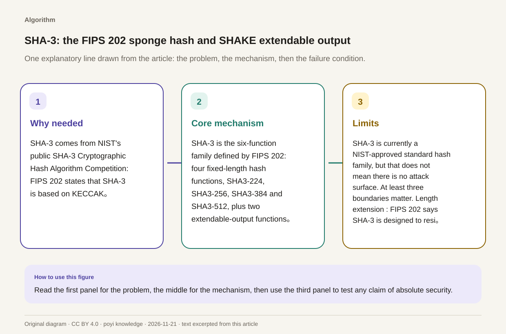
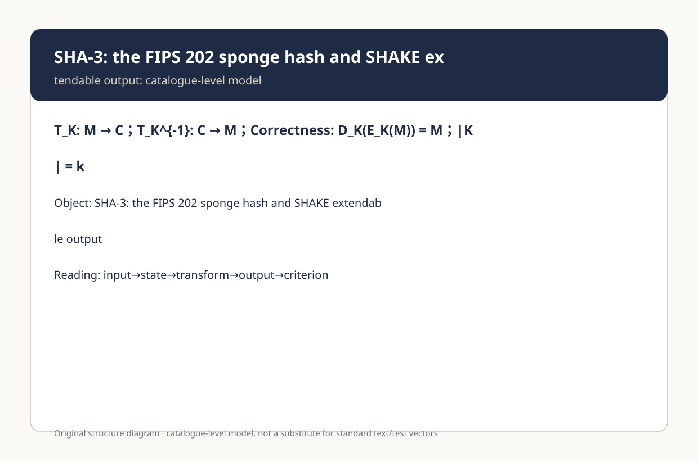

Principles
Algorithm: SHA-3 (SHA-3 与 Keccak). SHA-3 is the six-function family defined by FIPS 202: four fixed-length hash functions, SHA3-224, SHA3-256, SHA3-384 and SHA3-512, plus two extendable-output functions, SHAKE128 and SHAKE256. All six are built on the KECCAK-p[1600,24] permutation: the state is a 5×5 array of 64-bit lanes, 1600 bits in total, and the permutation iterates for 24 rounds. SHA-3 uses the sponge construction. With rate r and capacity c, r + c = 1600. The absorb phase splits the input into r-bit blocks: each block is XORed into the first r bits of the state, followed by one KECCAK-p[1600,24] call. The squeeze phase reads output from the first r bits of the state; if more output is needed, it permutes again and continues until the requested length is reached. The capacity is not directly exposed as input or output; it is the sponge's security parameter. The six rate/capacity pairs are:
| Function | Rate (bits) | Capacity (bits) | Output |
|---|---|---|---|
| SHA3-224 | 1152 | 448 | 224 bits |
| SHA3-256 | 1088 | 512 | 256 bits |
| SHA3-384 | 832 | 768 | 384 bits |
| SHA3-512 | 576 | 1024 | 512 bits |
| SHAKE128 | 1344 | 256 | any d bits |
| SHAKE256 | 1088 | 512 | any d bits |
Padding uses pad10*1: append a 1, enough 0 bits and a final 1 so the total length is a multiple of the rate. SHA-3 also appends a two- or four-bit domain suffix: SHA3-224/256/384/512 append 01, while SHAKE128/256 append 1111; the suffix puts hash-function and XOF inputs in different domains. Each KECCAK-p round applies five steps: θ does column parity mixing, ρ rotates within lanes, π permutes lanes, χ applies row-wise non-linear mixing and ι XORs a round constant. KECCAK-p[1600,24] uses 24 64-bit round constants, from 0000000000000001 through 8000000080008008; the ρ rotation amounts and π lane permutation are fixed tables. State lanes map to message/output bytes in little-endian order: the first byte of an eight-byte block enters the least significant byte of the lane. SHA3-224/256/384/512 output fixed 224/256/384/512-bit digests; SHAKE128/SHAKE256 can output any d bits. Shorter SHAKE outputs provide lower collision/preimage strength, as given by the FIPS 202 security-strength table.

Why it matters
SHA-3 comes from NIST's public SHA-3 Cryptographic Hash Algorithm Competition: FIPS 202 states that SHA-3 is based on KECCAK, the algorithm NIST selected as the winner of that competition. The Keccak reference defines Keccak as a family of sponge functions built on the Keccak-f permutation and pad10*1; the choice of rate and capacity determines the security strength.
The sponge differs from SHA-2's Merkle-Damgård iteration: SHA-2 feeds the chaining value directly into the next block and finally uses it as the digest, while SHA-3 splits the state into rate and capacity, absorbs/squeezes only the rate part, and squeezes the final output from the state rather than exposing the chaining value directly. That structural difference is why SHA-3 is designed to resist length-extension and similar attacks that work against Merkle-Damgård constructions.
Capacity is the security parameter: a larger capacity means a smaller rate and a higher generic-attack bound. SHA3-256 has c=512 bits and SHA3-512 has c=1024 bits. FIPS 202 Table 4 gives the security strengths: SHA3-224 112-bit collision/224-bit preimage, SHA3-256 128/256, SHA3-384 192/384, SHA3-512 256/512; SHAKE128/256 collision strength is min(d/2,128)/min(d/2,256) and preimage strength is min(d,128)/min(d,256). These numbers are the result of analysis and standards policy, not a mathematical proof of permanent security; the Keccak security claim is centered on capacity, and generic attacks are bounded by capacity, but that is not a proof against specific cryptanalysis.
XOF is SHA-3's new capability relative to SHA-2: SHAKE can produce any requested length without first fixing a digest size and truncating. The cost is that the output length does not affect the prefix already produced: SHAKE128(M, d) is a prefix of SHAKE128(M, d+e), unlike a fixed-length hash. The domain suffix keeps SHA-3 hashes, SHAKE, RawSHAKE and other uses from being confused with one another.
Applications
SHA3-224/256/384/512 are NIST-approved hash functions usable for all hash function applications. Table 8 of SP 800-131A Rev. 2 explicitly marks the SHA-3 family acceptable for all hash function applications; SHAKE128/256 are approved extendable-output functions whose specific uses are specified in NIST Special Publications.
One direct use of SHAKE is as an XOF: when an arbitrary-length output is needed, call SHAKE128 or SHAKE256. SP 800-185 defines four types of SHA-3-derived functions on top of SHA-3 - cSHAKE, KMAC, TupleHash and ParallelHash - each with 128-bit and 256-bit security strengths. KMAC is the Keccak Message Authentication Code, providing keyed integrity and authentication; it is a SHA-3-derived function, not the SHA-3 hash itself.
HMAC can also use SHA-3. FIPS 202 Table 3 gives the HMAC-SHA3 input block size B, which equals the rate in bytes for that SHA-3 hash: 144 bytes for SHA3-224, 136 for SHA3-256, 104 for SHA3-384 and 72 for SHA3-512. B is not the digest length; for example, SHA3-256 has B=136 bytes, corresponding to a rate of 1088 bits.

Limits & attacks
SHA-3 is currently a NIST-approved standard hash family, but that does not mean there is no attack surface. At least three boundaries matter.
Length extension: FIPS 202 says SHA-3 is designed to resist length-extension and similar attacks. Unlike Merkle-Damgård hashes, the classic H(M || pad(M) || X) length extension does not apply directly to SHA-3; the sponge absorbs and squeezes only the rate part, and the capacity is not directly exposed.
Capacity limit: sponge security is bounded by capacity; making a SHAKE output longer does not raise security above the bound allowed by the capacity. SHAKE128's collision strength is capped at 128 bits and SHAKE256's at 256 bits; when the output length d is small, collision strength falls as min(d/2, …).
XOF related outputs: SHAKE's output length does not affect the prefix it produces. An application must not treat SHAKE as a hash whose output length can be changed freely: if a protocol treats output length as a security parameter, a longer output contains all the bits of a shorter output, which can break domain separation or key-derivation assumptions.
Domain/rate misuse: using the wrong domain suffix or rate produces a different output. Replacing SHA3-256's suffix with SHAKE's 1111 in this batch yields SHAKE256("abc", 32) = 483366601360a8771c6863080cc4114d8db44530f8f1e1ee4f94ea37e78b5739, not SHA3-256("abc"). Such mistakes do not produce almost correct results; they produce completely different outputs.
Finally, NIST approval is standards policy, not a mathematical proof; applications still need to choose capacity, output length and domain separation appropriately, and must not treat SHA-3 as a guarantee of permanent security.
History
- 14 January 2011: Version 3.0 of the Keccak reference is published, defining the Keccak sponge family and the Keccak-f permutation. - SHA-3 competition: NIST runs the public SHA-3 Cryptographic Hash Algorithm Competition and selects KECCAK; FIPS 202 records that result. - August 2015: FIPS 202 is published, standardizing SHA3-224/256/384/512 and SHAKE128/256. - December 2016: SP 800-185 is published, specifying cSHAKE, KMAC, TupleHash and ParallelHash. - March 2019: SP 800-131A Rev. 2 is published; Table 8 gives the approval status of the SHA-3 family.
Worked example & verification
Worked example
Take one published or standard test vector, record the input, the ordered steps and the byte-exact output, then compare with an independent implementation. Where no citable numeric vector is available, the entry records only structural steps and does not invent an output.
References
- Wikipedia search entry for SHA-3 与 Keccak. https://zh.wikipedia.org/w/index.php?search=SHA-3%20%E4%B8%8E%20Keccak
- Handbook of Applied Cryptography (Menezes, van Oorschot, Vanstone). https://www.cacr.math.uwaterloo.ca/hac/